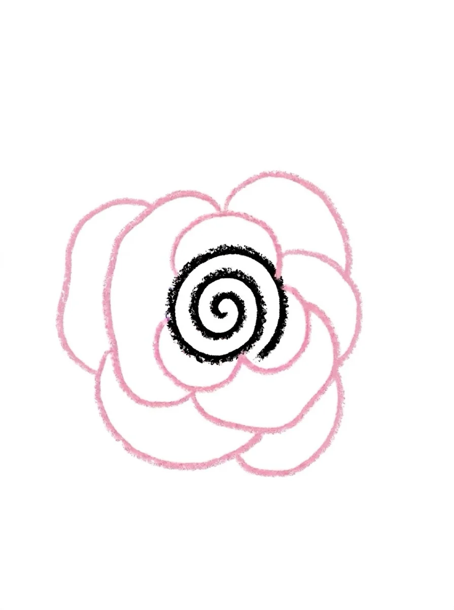
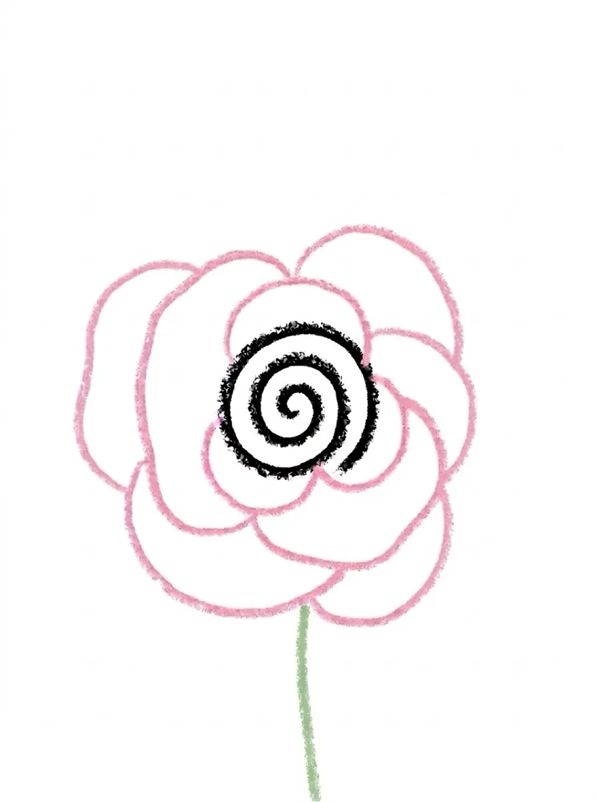
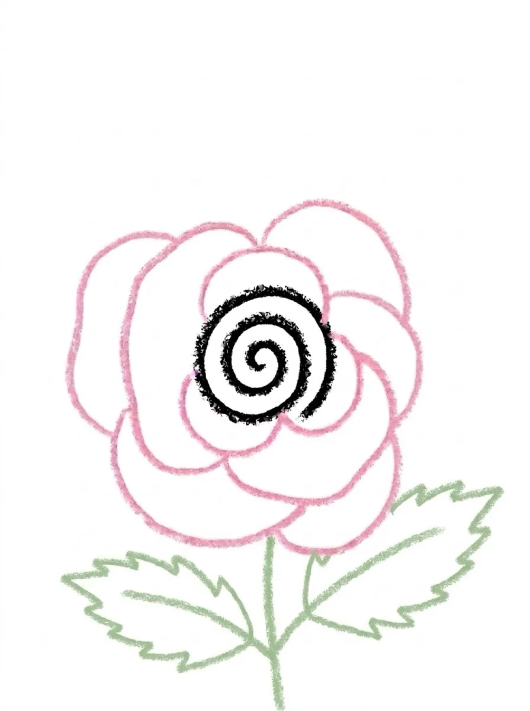

Rose Drawing for Kids How to Draw a Rose in 6 Easy Steps
Roses look fancy, but the secret is one squiggly spiral. Once kids nail that swirl in the middle, the petals practically draw themselves around it. This is the drawing that gets taped to grandma's fridge. Master this one and kids have the key to learning how to draw flowers and roses of every kind — every bloom is just a center with petals layered around it.
Quick Answer
This free step-by-step tutorial shows kids how to draw a rose in six easy steps: a spiral center, inner petals, outer petals, a stem, leaves, and finishing details. Download the printable PDF, grab crayons, and follow along together. Made for ages 5 and up — no signup needed, just print and draw.
At a Glance
- Subject: How to draw a rose
- Ages: 5+
- Steps: 6 steps
- Time: ~15 min
- Difficulty: Easy-Medium
- Supplies: Paper, crayons
✏️ How to Draw a Rose: Step by Step
One step per box — draw each new part in a different color so kids can see exactly what changed.
Step 1: The Spiral
Draw a small spiral in the middle of your paper, like a tiny snail shell. This is the rose's curled-up center.
Step 2: Inner Petals
Draw 3 small rounded petal shapes hugging close around the spiral.
Step 3: Outer Petals

Draw 6 bigger petals around those, opening outward like the rose is blooming.
Step 4: The Stem

Draw a straight-ish line going down from the flower for the stem.
Step 5: The Leaves

Add two jagged-edge leaves on the stem — roses have pointy little teeth on their leaves.
Step 6: Details and Color

Add a few small thorns on the stem, then color it in — red or pink petals, green stem and leaves.
📊 Rose Drawing by Age
Every age can join in — just adjust the job.
| Age | What they can do | Tip |
|---|---|---|
| 3–4 | Trace the spiral and color a finished rose | Draw the spiral for them — it's the hardest part at this age |
| 4–5 | Draw the spiral and petals with help | Wobbly petals still look like a rose — reassure them |
| 6+ | Draw the whole rose solo | Challenge: draw three roses at different bloom stages |
🖨️ Download Your Free Rose Drawing Printable
The printable lays out all 6 steps one per box, big enough for little hands — kids draw right alongside each step.
⬇️ Download Free Printable 🖨️ Print🎁 Free printable for ages 3+
More Drawing Pages
Tap any picture to open its tutorial and draw along step by step.

🌹 Rose Garden Countdown
Draw one rose a day for five days and line them up in bloom order — bud, half-open, full bloom. Kids see their own progress across the week, and the 'garden' growing on the wall is its own reward. Try a different petal color each day.
What You'll Need to Draw a Rose
Grab a black crayon for the spiral and petal outlines, plus pink or red for the petals and green for the stem and leaves. The spiral center is the trickiest part — a slightly thicker crayon makes it easier for small hands to control. White paper shows the pink best; avoid colored paper here since the petals need contrast.
What They're Learning
This rose starts from a spiral — a shape most kids haven't drawn before, which stretches their comfort zone in a good way. Layering petals from small to large teaches size relationships, and the jagged leaf edges are great for practicing controlled zigzag lines. The stem also introduces the idea of connecting separate parts into one picture.
Make It Yours
Once the basic rose is done, try a whole bouquet — draw three roses at different heights with different petal colors. Kids can also add a vase under the stem, or turn it into a Mother's Day card by drawing a heart next to the bloom. For a fun twist, try an all-blue ‘frost rose’ using cool colors only. A bouquet like this is also the friendliest way to practice how to draw flowers and roses together — same six steps, new colors and sizes every time.
🛒 Our Favorite Drawing Supplies
These are the supplies we reach for in our own home — washable (because kids), quality paper, and enough colors to avoid fights.
As an Amazon Associate, MomYouNeedThis earns from qualifying purchases — at no extra cost to you.
💡 Rose Drawing Tips for Parents
The spiral is this tutorial’s known tears point, so demonstrate it before your child begins. On scrap paper — never on their page — draw a loose curl of about two turns, with white space still showing between the lines. If their spiral does blob, do not erase it: add the next petals around it anyway, and the dark center becomes the shadowy heart of the rose.
Before the coloring starts, ask who the rose is for. Roses are the flower of thank-yous, birthdays and apologies, so a drawn rose usually has a destination. Knowing the person gives the drawing a purpose, and it can turn a wobbly practice flower into the one your child is most determined to finish.
🌹 Roses in the Real World
The garden rose is one of the oldest cultivated flowers in the world — people have been growing roses for thousands of years, and breeders have produced them in every color except a true blue. Wild roses are much simpler than the garden kind: just five petals around a golden center. The layered spiral on this page is the fancy garden version, bred petal by petal over centuries.
A rose's thorns are actually prickles, and they help the plant climb and keep hungry animals polite. Roses are also surprising relatives: apples, pears, strawberries, and almonds all belong to the rose family. Ask your child who their rose is for — roses are the flower of thank-yous, birthdays, and apologies, so most drawn roses have a destination.
🌹 Rose Drawing Step by Step: Fixes for Wobbly Roses
The spiral decides everything in a rose drawing step by step, and it fails in two opposite ways. Too tight, and step 1 becomes a dark blob with no rose inside it; too loose, and it reads as a snail that wandered into the wrong tutorial. The target is a loose curl with white space showing between the lines — about two turns, no more. If the spiral blobs, do not erase: hug it with the step 2 petals anyway, and the blob becomes the shadowy heart of the rose, which real roses genuinely have.
Petals cause the second wobble. If all six outer petals come out the same size and shape, the flower reads as a cabbage. Vary them on purpose — two big, two medium, two small — and let some overlap the ones behind. Overlap is what makes a rose look layered instead of stamped. A petal that lands in a strange place can be re-read as a petal folding backward; roses do that constantly.
The leaves finish the realism: their jagged edges are little teeth, and teeth drawn too big turn the leaf into a saw. Keep the teeth small and shallow, more like a bread knife than a shark. Thorns get the same advice — two or three tiny triangles on the stem, not a weapon. Work a rose drawing step by step with those rescues and the fanciest flower in the garden turns out to be six forgiving shapes — which is why this is the tutorial kids pick when they want to draw something for someone.
❓ Rose Drawing FAQs
What is the easiest way for a kid to draw a rose?
Start with a small spiral for the center, then draw small petals hugging it and bigger petals opening outward. Add a stem, two jagged leaves, and a few thorns. The spiral does the hard work — everything else is just rounded shapes around it.
What age can kids start learning to draw a rose?
The spiral is tricky, so most kids are ready around age 5 with a little help, and draw one solo by 6 or 7. Younger kids can trace the spiral on the printable and color the petals.
What supplies do we need to draw a rose?
Paper plus red, pink, and green crayons or markers. The free printable PDF lays out all six steps one per box so kids can draw right alongside each step.
Is the rose drawing printable really free?
Yes — every printable on MomYouNeedThis is 100% free to download and print. No signup, no payment, just tap the download button.
How do I print the rose drawing tutorial?
Open the PDF and print at 100% scale (not 'fit to page') so the drawing boxes stay big enough for little hands. The printable is designed to stay large — never shrunk to force a fit. The print button opens the full-size page in a new tab if you prefer to print from there.
How does a rose drawing step by step tutorial work?
Each of the six pictures shows the rose so far, with the newest part drawn in a fresh color. Your child copies just the colored part — one ring of petals at a time — and the bloom opens gradually instead of arriving all at once.
📚 Keep Exploring
- ✏️ All 76 Drawing Tutorials 76 free step-by-step drawing tutorials for kids.
- 🐾 Animal Coloring Free printable animal coloring pages for little learners.
- ✏️ Drawing Practice Free printable drawing pre-writing worksheet for toddlers.